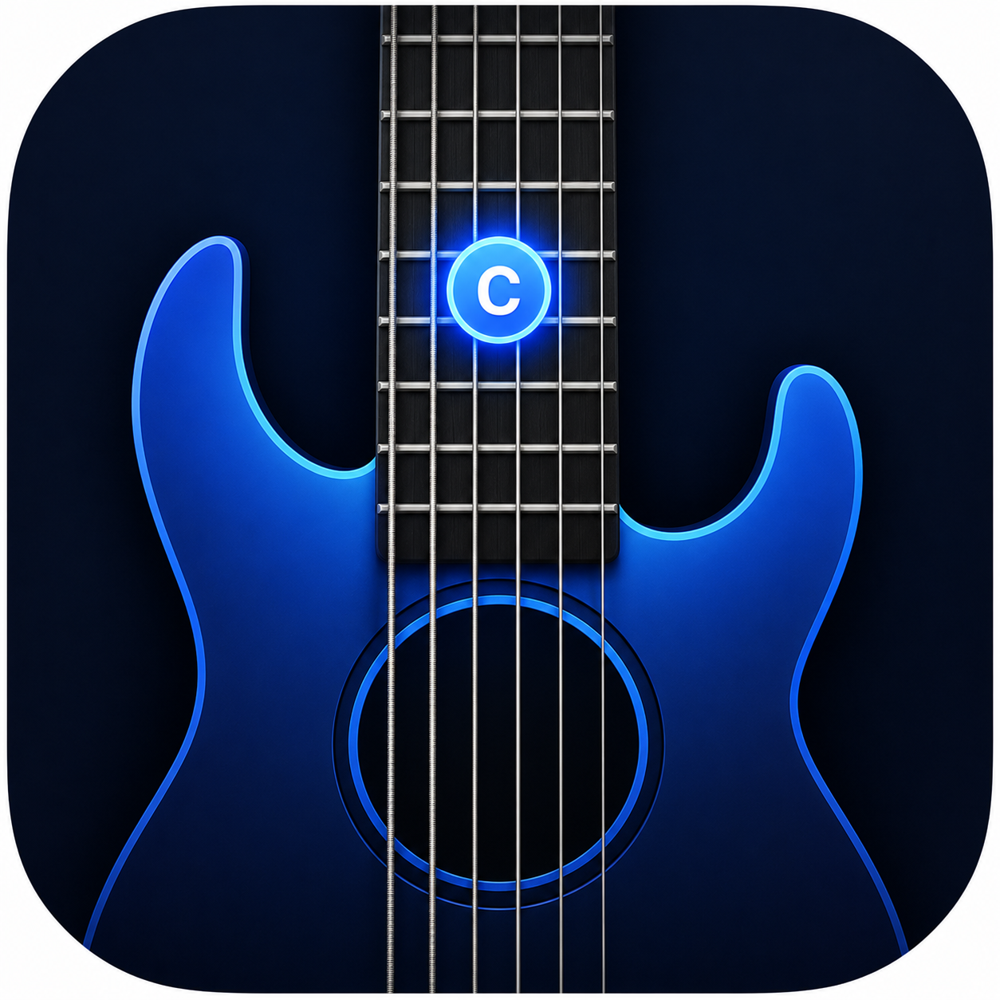

01
Structured note drills
Work one area at a time or expand across the neck with drills that stay readable and repeatable.

FretMaster Fretboard training for focused guitar practiceFretMaster blends note drills, real-time listening, and targeted repetition into a training flow that feels closer to rehearsal than rote memorization.
Support email: joe@projectakira.biz
The app is intentionally narrow: learn note locations faster, reinforce them with repetition, and connect fretboard knowledge to what you actually hear and play.
Every feature supports the same outcome: faster recognition, fewer hesitations, and a practice loop that stays useful even in short sessions.
Work one area at a time or expand across the neck with drills that stay readable and repeatable.
Use your guitar and let FretMaster listen for played notes so feedback happens while you perform.
Spend more time on uncertain positions instead of wasting reps on note locations you already own.
The product loop is short by design so it fits between lessons, rehearsals, or any small block of focused practice time.
Start with a note family, select specific strings, and focus on a section of the neck.
Move through prompts while live detection confirms what you played and keeps the loop responsive.
Return to missed notes until recognition becomes fast enough to support improvisation and reading.